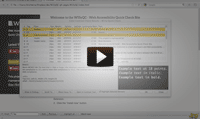

Welcome to the W15yQC - Web Accessibility Quick Check Firefox Extension Website
The W15yQC Firefox Extension is a tool web developers and web accessibility professionals can use to quickly check a dynamically generated web page, automatically scan a website, for common web accessibility issues.
Why 'W15y'?
The '15' in 'W15y' stands for the number of letters between the first W and last y in 'Web Accessibility', making W15y an abbreviation for Web Accessibility. This is in the same vein as using 'a11y' as an abbreviation for Accessibility and 'i18n' as an abbreviation for Internationalization.
How to Use W15yQC
To get started, watch an introduction to W15yQC: 
Then, visit the W15yQC Documentation page for Features, Tutorials, Screencasts, and the W15yQC FAQ.
W15yQC Features
How to Install W15yQC
Watch a demonstration screencast of installing W15yQC.
- Go to the W15yQC Downloads page.
- Until there is a stable release to select from, select the latest beta version to download.
- Once the XPI file has downloaded, just drag it into any open Firefox window to install or use Firefox's "Open file..." feature to open the XPI file.
- Select "Restart Now".
- The W15yQC extension will be installed when the browser is re-opened.
How to Uninstall W15yQC
- Open the Firefox browser.
- Navigate on the browser menu bar to "Tools", and then "Add-ons".
- Select the "Extensions" tab.
- Select "Remove" button under W15y Quick Check, and then "Restart Now".
- The W15yQC extension will be gone when the browser is re-opened.
Authors and Contributors
Written by Brian Richwine (@blrichwine).
License
The W15yQC - Web Accessibility Quick Check Extension is licensed under the Apache License, Version 2.0 (the "License"); you may not use this file except in compliance with the License. You may obtain a copy of the License at: http://www.apache.org/licenses/LICENSE-2.0
Disclaimer
Unless required by applicable law or agreed to in writing, software distributed under the License is distributed on an "AS IS" BASIS, WITHOUT WARRANTIES OR CONDITIONS OF ANY KIND, either express or implied. See the License for the specific language governing permissions and limitations under the License.
Support or Contact
Having trouble with W15yQC? Check out the documentation at http://blrichwine.github.com/W15yQC/w15yqc_docs.html or contact W15yQC@gmail.com and I'll try to help you out.